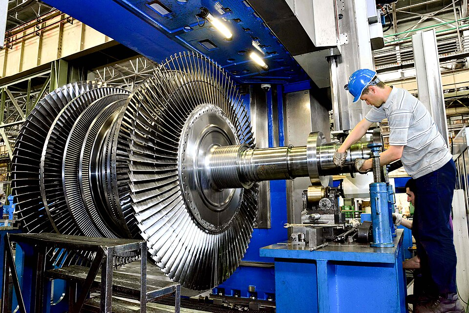
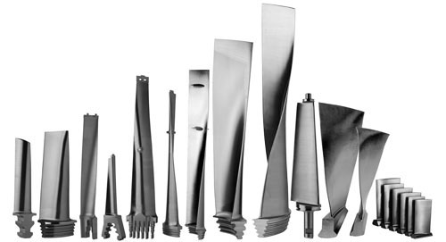
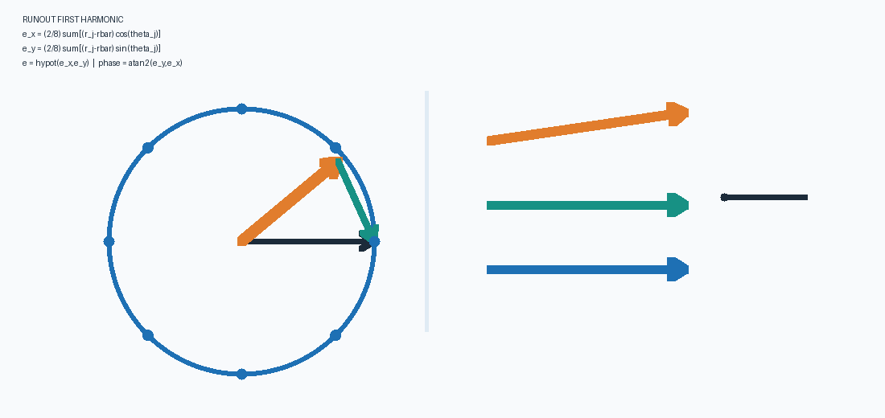
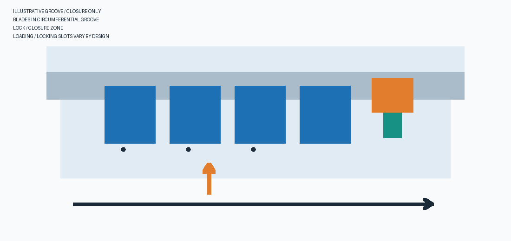
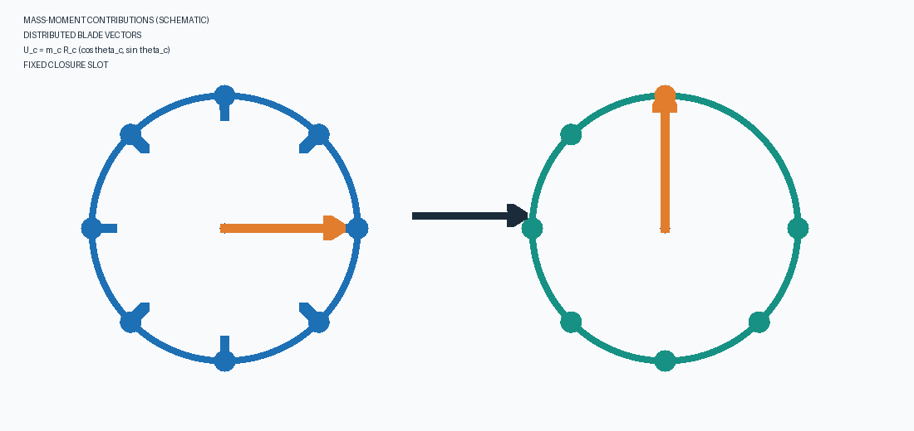

Blade Sorting
Operator guide · offline edition
What the tool does
It assigns a set of blade masses to circumferential slot positions, evaluating the resultant vector in g·mm. In combined mode it adds a rotor/disk vector inferred from geometry and eight radial runout samples. The optimizer searches permutations; finite simulated-annealing runs do not guarantee a global optimum. Always validate the assembled rotor on appropriate balancing equipment.




Coordinate convention and first harmonic
The installation-angle control sets Slot 1 to global φ (default 0° at +x); angles increase counterclockwise viewed from the declared rotor face. Eight signed runout values correspond to 0°, 45° … 315° relative to slot 1. Positive reading means outward in the model convention. Confirm probe polarity and phase with a known eccentricity; do not enter peak-to-peak TIR in every cell.

eₓ=(2/8)Σ(rⱼ−r̄)cos θⱼ; eᵧ=(2/8)Σ(rⱼ−r̄)sin θⱼ; amplitude e=hypot(eₓ,eᵧ), phase atan2(eᵧ,eₓ). Residual RMS describes fit mismatch; sparse samples can alias higher harmonics.Step-by-step: follow the numbered Inputs
- 1 Analysis. Select blade-only (bare rotor assumed zero) or combined mode. Set disk diameter/thickness in mm, density in kg/m³ and nominal blade CG radius in mm. The combined mode estimates a uniform solid cylinder—not a measured mass-unbalance vector or a bored/pocketed rotor.
- 2 Blades. Enter blade count (2–120); choose blank manual inventory, import measured blade IDs/masses from CSV, or load seeded synthetic samples. The seed also reproduces the hybrid search. All inventory masses are in g and use the common nominal CG radius unless the fixed closure override is selected.
- 3 Runout. In combined mode enter eight signed radial readings in mm at 0°, 45° … 315° relative to slot 1. Positive means outward, not peak-to-peak TIR. Blade-only disables these readings.
- 4 Installation. Enter the global angle of slot 1 relative to +x (default 0°), measured counterclockwise from the declared viewing face. The first runout reading is at that slot; subsequent readings are 45° apart. Confirm probe sign/phase against a known reference mark.
- 5 Closure. If applicable, enable the fixed closing blade, select its inventory ID and designated physical slot (the last slot is the software default, not a universal assembly rule). Pending blocks the solver; Demonstration omits cutout moment and is not a physical balance prediction. Measured requires effective closing-blade CG radius plus total bare-rotor vector measured WITHOUT that closure blade.
- 6 Method. Choose hybrid simulated annealing (five independently seeded 100,000-swap runs with geometric cooling T_next=0.9999T) or opposite-pairing baseline, then run. Finite searches do not prove global optimality.
Inspect Outputs
The Overview displays four graph thumbnails. Open Vectors, Slot map, Runout or Convergence individually for full-size plots and Matplotlib zoom/pan tools; Schedule shows the slot-by-slot assignment and CSV export. Review residual magnitude and phase, warnings, and model assumptions. A smaller modeled residual is not an acceptance criterion. Export, preserve the measurement datum, and independently verify actual assembly, runout and balance under the approved procedure.
CSV input
Required headers: blade_name,weight (some readers may accept semicolon separators). Names must be unique and nonblank; weights must be finite and positive. Example:
blade_name,weight BLADE-001,101.245 BLADE-002,100.981 BLADE-003,99.876
Mass units are g. Keep source identifiers exactly as supplied and retain the original measurement record. Include the special blade as one inventory row but enable fixed closure and select its ID and physical slot; it must not be freely permuted.
Model, units and limitations
- Blade moment is vector sum
U_blades=Σ mₖ rₖ(cos θₖ,sin θₖ); net moment adds the bare-rotor vector to this blade sum, which already includes a fixed closing blade if enabled. Do not add it twice. Magnitude isJ=√(Uₓ²+Uᵧ²), in g·mm. - Combined mode estimates solid-disk mass as
M=ρπ(D/2)²tin consistent SI units and maps fitted eccentricity toU_disk=M_g(eₓ,eᵧ). Real bores, cavities, nonuniform density, shafts, fit and assembly effects are omitted. - Current runout fit uses
θⱼ=45°jrelative to slot 1. When start phase is φ, global azimuth for reading j isφ+45°j. Mean offset is separated from the first harmonic. The slot-radius model uses the radial projection rₖ=R+eₓ cosθₖ+eᵧ sinθₖ. A runout-derived vector is geometric, not a direct mass-unbalance measurement. NIST documents limitations of a single circular trace: NIST Engineering Statistics Handbook. - Equal nominal blade CG radii and interchangeable blade constraints are assumed. Families, aero/mistuning limits, retention, local stresses, tolerances and assembly restrictions are not optimized.
- Result vectors point toward the modeled heavy side; they are not automatically a correction instruction. Validate sign/phase and use an approved balancing specification. No ISO/API grade or tolerance is asserted.
Reading the results
- Magnitude (g·mm): modeled static unbalance moment; compare only with matching model inputs and assumptions.
- Phase (degrees): vector direction from global +x, counterclockwise; slot 1 may start at an offset φ. It is undefined at zero magnitude.
- Runout RMS: mismatch between sampled values and fitted sinusoid, not uncertainty or a quality acceptance criterion.
- Search trace: best-so-far objective over proposals; plateaus do not prove the optimum.
- Lower bound: conservative bound under this model. A positive bound proves exact zero cannot be achieved by the available permutation; zero bound does not prove zero is achievable.
Illustrative closure-slot / groove concept

Read the closure engineering note for the three interpretation paths, equations, evidence and decision gate.
Engineering reference
Technical context: EP2549060A2 describes an example tangential groove, loading/locking slots and lock engagement; EP2253800 A2 describes one balanced-rotor arrangement. Neither source establishes the geometry of the rotor shown in the contextual photos or used in your work. See the sourced closure note.

See engineering model, project references, and the linked patent sources in the closure note. Patent disclosures illustrate possible mechanisms, not the installed machine or a recommended design.